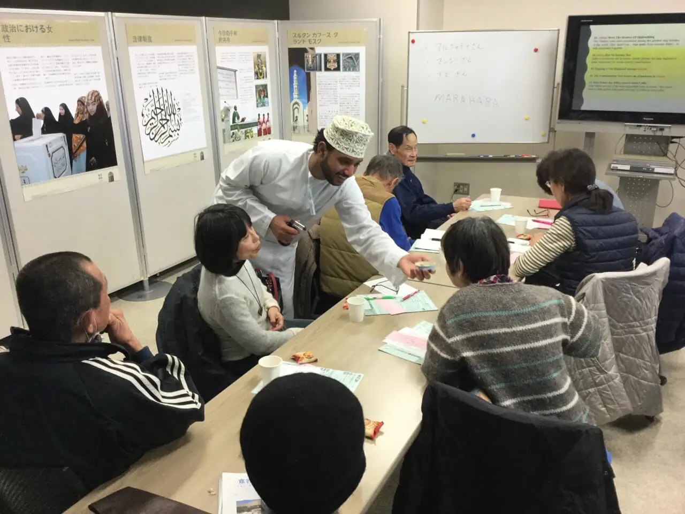

جامعة توكاي، طوكيو، اليابان 2017

من 16 يناير حتى 19 يناير 2017.
استضاف المعرض مكتب الشؤون الدولية بجامعة توكاي.
寛容・理解・共存”
をキーワードに、オマーンの伝統や文化、古代
文明遺産の保護において同国が果たしている役割など
تعد جامعة توكاي واحدة من أكبر مؤسسات التعليم والبحث العلمي باليابان. اليوم، تنتشر على نطاق ثمانية مواقع، تشكل إحدى وعشرون مدرسة عليا وكلية، تتكون من ثمانون قسمًا وتخصصًا وبرنامجًا. ويدرس أكثر من ثلاثون ألف طالب في جامعة توكاي، بما في ذلك سبعمائة طالب وافد من جميع أنحاء العالم.
جامعة توكاي هي جامعة خاصة أسسها الدكتور شيجيوشي ماتسوماي في عام 1942. ويشير مصطلح "توكاي" إلى البحر إلى شرق آسيا، وهو المحيط الهادئ، ويرمز إلى الرغبة في تعزيز الروح الثرية، ووجهات النظر الواسعة. كما تتمثل الروح والأهداف التأسيسية لجامعة توكاي في المساهمة في إثراء المجتمع البشري، ورعاية الأشخاص المتفوقين والموهوبين وإثارة الاهتمام بكوكبنا، والشعور بالمسؤولية تجاه مستقبل البشرية. منذ إنشائها، أعطت جامعة توكاي الأولوية منهجها حول الحضارة الحديثة، بناءً على إيمانها بأن الجامعة لا يجب أن توفر المعرفة والتكنولوجيا فحسب، بل يجب أن تكون أيضًا مكانًا يزرع فيه ثراء الإنسانية والإبداع في كل فرد.
ترتبط جامعة توكاي باتفاقيات للتبادل الأكاديمي مع أكثر من مائة جامعة ومنظمة في خمس وثلاثون دولة حول العالم.
اقتباس من التحية الرسمية للدكتور مهندس تاتسورو ماتسوماي، رئيس النظام التعليمي بجامعة توكاي:
“ما هي مهمتنا لهذا العصر؟ لقد انتهى الآن العصر الذي استمد فيه الناس قيمهم من الدين أو الإيديولوجيا فقط. نحن نعيش نقطة تحول في التاريخ، وندخل قرنًا جديدًا فوضويًا حيث القيم حول العالم متنوعة ومعقدة. وهنا يجب أن نتعلم كيف نقدر تلك الصفات التي يقدرها الآخرون وأن نجد طرقًا للعيش معًا دون تهديد الآخرين. مع وضع هذا في الاعتبار، يمكننا تكوين علاقات جديدة بين الأمم، بين الناس، وبين البشرية وبقية البيئة. ... نحن نعلم أنه يمكن الحد من الصراعات، إن لم يكن القضاء عليها، من خلال تطوير علاقات أفضل بين الأفراد وبين دول العالم. ونلفت عناية حضراتكم بأن نظام جامعة توكاي التعليمي يتمتع برؤية لحضارة جديدة، حيث يمكن للأفراد والمجتمعات العيش معًا بسلام، ويعيش جنسنا البشري في وئام مع البيئة. مهمتنا هي تحويل هذه الرؤية إلى حقيقة واقعة.”
اقتباس من كيوشي يامادا، رئيس جامعة توكاي:
“من خلال ممارسة التفاعل مع مجموعة متنوعة من الأشخاص، والمشاركة في تبادل الأفكار مع أقرانهم، واستكمال مشاريعهم معًا، يستطيع الطلاب تطوير المهارات والأدوات اللازمة لتحقيق ذلك في مجتمع اليوم. هدف المركز هو تنمية قدرة الطلاب على التفكير المستقل، والقدرة على التعاون مع الآخرين، والقدرة على مواجهة التحديات، والقدرة على تحقيق الأهداف. وبهذه الطريقة، يقوم المركز برعاية الأشخاص الذين يمكنهم الشروع في تحديات جديدة دون التقيد بالمفاهيم والمفاهيم الموجودة مسبقًا.”
بالإضافة إلى المعرض، أقيمت ورشة عمل في 21 يناير 2017 حول الحياة والثقافة في عمان، مع عرض تقديمي للطالب العماني السيد أمجد نصار الجديدي، الملتحق بكلية الدراسات العليا للاقتصاد (برنامج الماجستير).
تفضلوا بزيارة معرض التسامح العالمي الافتراضي بلغتكم المفضلة